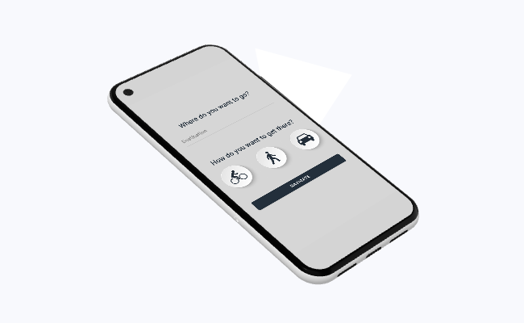

Labyrinth
Navigation through touch, not sight

Labyrinth is an accessible navigation app that reimagines how we get around. Instead of relying on visual or audio cues, it translates Google Maps directions into a series of coded vibrations, translating certain categories of turns (left, right, merge/straight) into buzz patterns. The user simply enters their destination, their mode of transport, and then they can navigate all the way to their destination without so much as even looking or listening to their phone.
This app was created to make navigation more accessible for those who are hard of hearing or cannot constantly check their phone while navigating. It won the 'Most Technical' award at IEEE's UCSD WI22 showcase. I designed the UI in Android Studio and wrote the backend in Java.